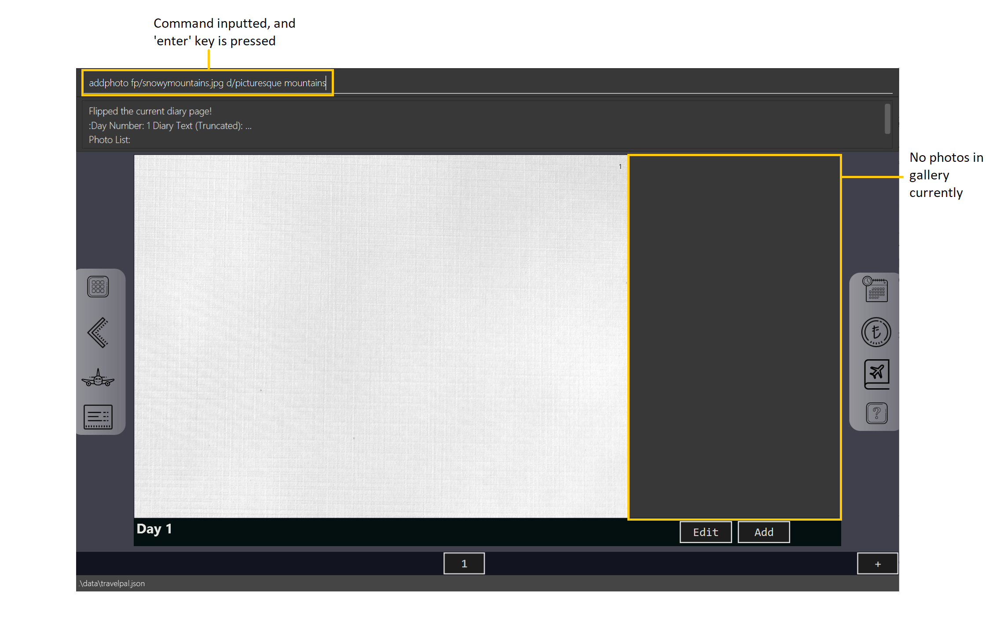

Overview
My team and I were tasked with enhancing, or morphing an existing address book application built on JavaFX for our software engineering project.
We chose the latter, which’s end product was TravelPal, a desktop travelling companion application catered for leisure travellers. TravelPal allows travellers to manage their travelling itinerary, bookings, expenses and inventory conveniently in one place, and record their travels in a diary.
As per the constraint given to us in developing this project, the user interacts with TravelPal mainly using a command line interface (CLI), although it has user interface alternatives for most of its operations.
My main role was to develop the diary feature, which allows the user to store and edit memorable details of their trip with both multimedia and text.
Summary of contributions
Main contribution 1: Implemented the diary feature.
-
What: Overall, this feature allows the user to key in memorable details of his / her travels, and store multimedia such as photos of the trip, displayed in a user friendly and eye-catching format.
-
Justification: Leisure travellers often want to reminisce on previous trips they have made long after the trip, or share its details with friends and loved ones.
-
Highlights: Due to the large amounts of displayable multimedia, the user interface of this feature was most challenging to implement, requiring much analysis and consideration in striking a balance between code performance and organization. To ensure support for various forms of multimedia in the future, the user interface implementation also had to be highly extensible.
Main Contribution 2: Base address book code refactor

-
What: I added and updated several
uicomponents, which of particular note wasui FormItems, a convenient and reusable code structure to build user input forms anywhere in TravelPal. I also refactored all of thelogiccode component of the base address book code for team use in TravelPal. -
Justification: Given the limited time frame of our project, it was crucial that we utilised much of the existing code to speed our development process, and develop code components that were easily reusable.
In addition, although the code base given to us was extensive, much of the common functionality we had in mind for TravelPal, such as the ability to switch between pages of the application, were not immediately implementable from the given address book code base.
-
Highlights: In achieving the desired functionality, it was challenging to avoid making intrusive changes to the code base whenever possible, as it would introduce additional burden for the team in understanding the code.
Other Contributions
-
Code contributed: [RepoSense code] [Github pull requests]
-
Idea generation:
-
Contributed main idea of TravelPal and its various sub-features (itinerary, diary, expenses, etc.) during project inception, which the team agreed upon. (see travelpal idea generation google docs)
-
-
Feature additions and enhancements
-
Project management:
-
Tools:
Contributions to the User Guide
In developing TravelPal, a completely new user guide was needed to provide usage instructions for the various new features. Shown below is one of the various sections I contributed to the User Guide, on adding a photo to display in the diary feature. |
Adding a photo
If you have just created a fresh diary entry, and you’re wondering where to go next, then you may want to start by adding your photos to display in the gallery ([diary_gallery_display]).
There are 3 ways for you to add a photo, the last option being the least flexible but also the fastest!
In all options, the image file chosen should be of the file types .jpg, .jpeg, or .png.
|
Option 1: Using the addphoto command with the fp/ prefix
-
Usage: Typing in the command
addphoto fp/<file path> [d/<description>] [dts/<date taken>], with the arguments described below, will add the image located at thefile pathon your computer to the gallery. -
Arguments:
-
<file path>- Relative file path from the location of the TravelPal’s jar file, or an absolute file path. (see [glossary] for details of relative and absolute file paths) -
<description>(optional) - The description of the photo to be shown in the gallery, of maximum length 20. If unspecified, the file name is used instead, shortened to the maximum length. -
<date taken>(optional) - The date taken of the photo, of the formatd/M/yyyy HHmm. If unspecified, the last modified date of the file is used instead.
-
Example Usage
Scenario:
-
You are currently viewing an empty diary entry for day 1 and you want to add a new photo.
-
Also, you want to give the photo a custom description, but want to use the last modified date of the image file in your computer as the date taken for the photo.
-
Shown below is an example of the photo on your computer you want to add,
snowymountains.jpg, that is located in the same place as the TravelPal application.

-
You should type in the
addphoto fp/snowymountains.jpg d/picturesque mountainscommand in the command line input, and press the 'enter' key.-
Here, the relative
<file path>is simply the name of the file,snowymountains.jpg, since the image file is located in the same directory as the TravelPal application.Figure 2. Example usage of theaddphotocommand with thefp/option
-
-
That’s it! The photo, with the specified description and last modified date will be added. You should see a brief confirmation message in the command result box.
-
Additionally, there will be a auto-generated photo numbering, for use as described in [diary_text_displaying_images].
-

addphoto command with the fp/ optionOption 2: Using the addphoto command with the fc/ prefix
-
Usage: Typing in the command
addphoto fc/ [d/<description>] [dts/<date taken>], with the optional arguments described below, will open your system’s dialog to choose an image file. -
Arguments (optional):
-
<description>- The description of the photo to be shown in the gallery, of maximum length 20. If unspecified, the file name is used instead, shortened to the maximum length. -
<date taken>- The date taken of the photo, of the formatd/M/yyyy HHmm. If unspecified, the last modified date of the file is used instead.
-
Using both the fc/ and fp/ prefix will cause TravelPal to ignore the fp/ prefix!
|
Option 3: Using the Add button under the gallery display
-
Usage: Clicking the
Addbutton located under the gallery display area ( [diary_gallery_button_bar]) will open your system’s dialog to choose an image file. -
If this option is used, then the
<description>&<date taken>are not specifiable and will be auto generated as described above.
Example Usage for addphoto command with the fc/ option or add button
| See the user guide for this usage scenario, not included in this project portfolio page. |
Contributions to the Developer Guide
In the course of this project, my team and I realised we developed a substantial amount of code on top of the code base given to us. Hence, we updated the TravelPal developer guide to reflect the changes we needed. Below is one of the various sections I contributed, documenting the aspect of the diary that stores and displays photos. |
[Diary] Photo Manager
The photo manager pertains to components for storing, and displaying user specified photos on the disk.
Aspect: Models

PhotoList as contained by a diary entry, and its contained modelsPhoto
The model for a photo stored in memory is stored in the DiaryPhoto class.
It contains three key fields, that is, the imagePath, description, and dateTaken fields which are used to display key information of the image to the user.
The imagePath and dateTaken were implemented respectively with the robust java apis of Path and LocalDateTime, while description is simply a String.
In addition, a JavaFX Image is also stored inside the DiaryPhoto (not shown in Class diagram of a PhotoList as contained by a diary entry, and its contained models for brevity),
which holds the Image to use for displaying in an ImageView inside the user interface. The Image is cached this way,
as on-demand Image construction in the user interface involves costly I/O operations.
|
Restrictions on fields during
|
PhotoList
On the other hand, the DiaryPhoto models are contained within a PhotoList. It stores the photos in a JavaFX ObservableList,
so that changes are registered with the user interface. (see Aspect: User interface of photo manager)
It also supports several convenience wrapper methods around the underlying ObservableList, tailored for use for the logic components.
Aspect: User interface of photo manager
The main UiPart component that displays photos is the DiaryGallery.
It abides by the Page implementation (see [page_api]), and is thus contained within,
in one of DiaryPage’s placeholders.
DiaryPage (not shown)The main JavaFX component responsible for displaying the photos is a ListView<DiaryPhoto> component.
The ListView obtains its data from the PhotoList of
the DiaryGallery, which is automatically observed by the ListView.
Hence, changes in the PhotoList, such as the addition of a DiaryPhoto are immediately communicated
to the user interface.
The ListView uses a simple custom cell factory, which sets the ListCells of the ListView to use DiaryGalleryCards
as its graphic. DiaryGalleryCards are in turn generated in the cell factory using the ListCell’s index and a DiaryPhoto instance.
DiaryGalleryCards display the information as supplied by the DiaryPhoto model using a series of Labels and one ImageView.
Additionally, the index of the card as ordered in the DiaryGallery is also displayed, but not stored in the model.
Aspect: Logic of photo manager operations
The logic for photo manager plays to the same PageParser structure of parsing commands, that is,
DiaryParser returns either AddPhotoParser, DeletePhotoParser when the appropriate command word is parsed, which
in turn returns instances of AddPhotoCommand and DeletePhotoCommand respectively.
Logic aspect 1: Adding photos (through command line file path or os file chooser)
Following DiaryParser returning an instance of AddPhotoParser that calls parse() on the user specified arguments,
a number of operations happen, as per the UML sequence diagram below ([addphotoparser_parse_sequence_diagram]). The specifics of getFilePath,
parseDescription, parseDateTime are detailed further down below.

Parsing the image file path
-
Using
ArgumentMultimap, the file chooser prefix,fc/, is checked for. If present, the OS file choosing gui is opened usingImageChooser(a simple extension of JavaFX’sFileChooserenforcing image file extensions), and the data file path prefix is ignored. -
The
getFilePathsubroutine is then called, detailed in Activity diagram of getFilePath subroutine, which checks for the existence and validity of the image as supplied by theImageChooseror the file path in thefp/argument. -
If the
fc/was unspecified and the parsing process fails any of the checks,getFilePaththrows aParseException.

Parsing the description of the photo
-
If the description prefix is present,
AddPhotoParsertries to construct theDiaryPhotoinstance with the specified input. If validation of the description, as described in Aspect: Models fails, then aParseExceptionis thrown during the instance construction. -
Otherwise, the file name of the validated file from Parsing the image file path (truncated to match
DiaryPhoto’sdescription constraints) is used.

Parsing the date of the photo
-
If the date time prefix is present,
ParserDateUtilis used to parse the input as per the app level date formats. AParseExceptionis thrown in the case of date parsing failure, byParserDateUtil. -
Otherwise, the last modified date of the validated file from Parsing the image file path is used.
The DiaryPhoto instance is then constructed, and passed to AddPhotoCommand which simply adds the DiaryPhoto to the
current PhotoList of the DiaryEntry.
Logic aspect 2: Deleting photos
Following DiaryParser parsing the 'delphoto' command from the user, an instance of DeletePhotoParser is created, which parses the received arguments.
-
The
DeletePhotoParsersimply parses the arguments for a valid integer, failing which aParseExceptionis thrown. -
An instance of
DeletePhotoCommandis then returned, which attempts a delete operation on the currentPhotoListof theDiaryEntrywith the specified index. ACommandExceptionis thrown to alert the user if the index was out of bounds.
Design considerations
| Feature | Alternative 1 | Alternative 2 |
|---|---|---|
Validation of image file path |
The first option is to implement the file path validation directly inside the This would have enforced a stricter level of validation on the image file path throughout the code, such as
if an instance of However, since the storage model for This secondary constructor would thus defeat the defensive benefit of implementing validation directly in the model. |
The second, chosen option, was to implement the file path validation inside the parser itself. Although this option limited the validation to only the 'addphoto' command, it allowed for leeway in
image path validation in other areas such as Moreover, Since the function for parsing the image file can and was abstracted into a single utility function, any other areas in future development needing this functionality can simply reuse this code. Overall, this leads to a more robust behaviour of the application, while providing the same level of extensibility as the first option. |
Conclusion
The constraints imposed on our development process necessitated careful deliberation and consideration of both our product, TravelPal, and the changes needed to our code. From this process, I gained many invaluable insights for future software projects, particularly in the area of requirements analysis.
Nonetheless, using my prior experience, I was able to contribute and implement numerous suggestions which resulted in an extensible code base, easing the team development process.
Overall, developing TravelPal proved to be both a challenging and fruitful experience for me.